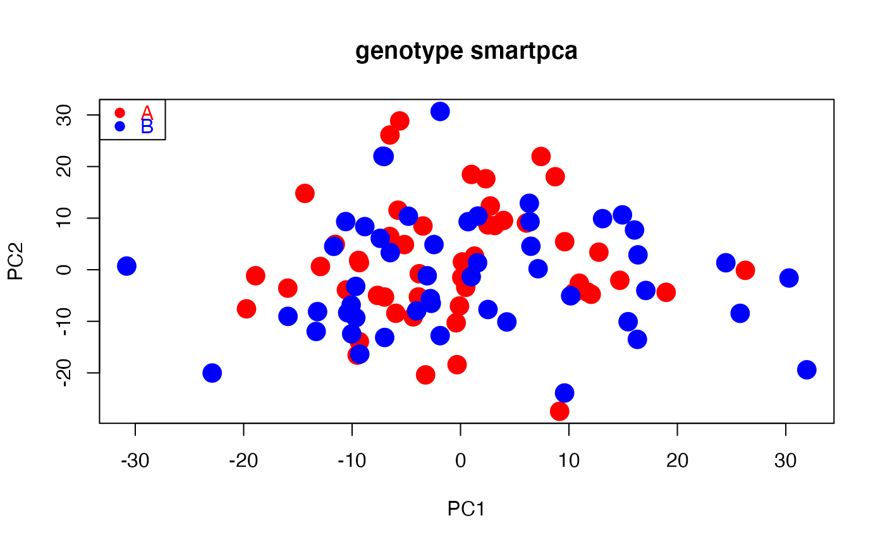
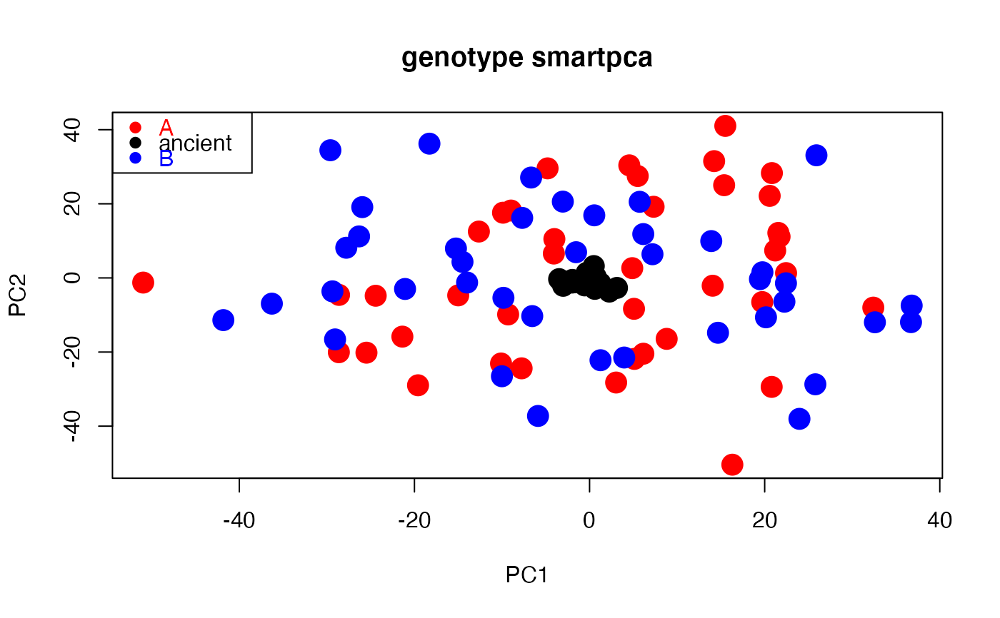

smart_pca.RdCompute Principal Component Analysis (PCA) for variable x sample genotype data including covariance (centered), correlation (z-score) and SMARTPCA scaling,
and implements projection of ancient samples onto modern PCA space. SMARTPCA scaling controls for genetic drift when variables are bi-allelic genetic markers
such as single nucleotide polymorphisms (SNP) following Patterson, Price and Reich (2006).
Optimized to run fast single value decomposition for big datasets.
| snp_data | File name read from working directory.
SNP = rows, samples = columns without row names or column headings.
SNP values must be count data (no decimals allowed). File extension detected automatically whether text or |
|---|---|
| packed_data | Logical value for |
| sample_group | Character or numeric vector assigning samples to groups. Coerced to factor. |
| sample_remove | Logical |
| snp_remove | Logical |
| missing_value | Number |
| missing_impute | String handling missing values.
Default |
| scaling | String. Default |
| program_svd | String indicating R package computing single value decomposition (SVD).
Default |
| pc_axes | A numeric value.
If |
| sample_project | Numeric vector indicating column numbers (ancient samples) projected onto (modern) PCA space.
Default |
| pc_project | Numeric vector indicating the ranks of the PCA axes ancient samples are projected onto.
Default |
Returns a list containing the following elements:
pca.snp_loadings Dataframe of principal coefficients of SNPs. One set of coefficients per PCA axis computed.
pca.eigenvalues Dataframe of eigenvalues, variance and cumulative variance explained. One eigenvalue per PCA axis computed.
pca_sample_coordinates Dataframe showing PCA sample summary.
Column Group assigns samples to groups.
Column Class specifies if samples "Removed" from PCA or "Projected" onto PCA space.
Sequence of additional columns shows principal components (coordinates) of samples in PCA space (1 column per PCA computed named PC1, PC2, ...).
PCA is a rigid rotation of a Cartesian coordinate system (samples = points, axes = variables or SNPs) that maximizes the dispersion of points along a new system of axes (Pearson 1901; Hotelling 1933; Jolliffe 2002).
In rotated space (ordination), axes are principal axes (PCA axes), eigenvalues measure variance explained, and principal coefficients measure importance of SNPs (eigenvectors), principal components are coordinates of samples (i.e., linear combinations of scaled variables weighted by eigenvectors).
Principal coefficients are direction cosines between original and PCA axes (Legendre & Legendre 2012). PCA can be computed by eigenanalysis or, as implemented here, single value decomposition (SVD).
SNPs can be scaled in four different ways prior to SVD: (1) no scaling; (2) covariance: SNPs centered such that M(i,j) = C(i,j) minus mean(j)) where C(i,j) is the number of variant alleles for SNP j and sample i, and M(i,j) is the centered value of each data point; (3) correlation (z-scores): SNPs centered then divided by standard deviation sd(j), (4) SMARTPCA: SNPs centered then divided by sqrt(p(j)(1-p(j))), where p(j) equals mean(j) divided by 2, quantifies the underlying allele frequency (autosomal chromosomes) and conceptualizes that SNP frequency changes at rate proportional to sqrt(p(j)(1-p(j))) per generation due to genetic drift (Patterson, Price and Reich 2006).
SMARTPCA standardization results in all SNPs that comply with Hardy-Weinberg equilibrium having identical variance.
SMARTPCA (Patterson, Price and Reich 2006) and EIGENSTRAT (Price, Patterson, Plenge, Weinblatt, Shadick and Reich 2006) are the computing suites of software EIGENSOFT (https://reich.hms.harvard.edu/software).
svds runs single value decomposition much faster than fastSVD. With svds, pc_axes indicates number of eigenvalues and eigenvectors computed starting from PCA axis 1. fastSVD computes all eigenvalues and eigenvectors. Eigenvalues calculated from singular values divided by number of samples minus 1. If number of samples equals number of SNPS, fastSVD prints message alert that no computing efficiency is achieved for square matrices.
Ancient samples (with many missing values) can be projected onto modern PCA space derived from modern samples.
Following Nelson Taylor and MacGregor (1996), the projected coordinates of a given ancient sample equal the slope coefficient of linear fit through the origin of (scaled) non-missing SNP values of that sample (response) versus principal coefficients of same SNPs in modern samples.
Number of projected coordinates per ancient sample given by length(pc_ancient).
With svds, pc_axes must be larger or equal to length(pc_ancient).
Data read from working directory with SNPs as rows and samples as columns.
Two alternative formats: (1) text file of SNPs by samples (file extension and column separators recognized automatically) read using fread; or (2) duet of EIGENSTRAT files (see https://reich.hms.harvard.edu/software) using vroom_fwf, including a genotype file of SNPs by samples (*.geno), and a sample file (*.ind) containing three vectors assigning individual samples to unique user-predefined groups (populations), sexes (or other user-defined descriptor) and alphanumeric identifiers.
For EIGENSTRAT, vector sample_group assigns samples to groups retrievable from column of file *.ind. SNPs with zero variance removed prior to SVD to optimize computation time and avoid undefined values if scaling = "sd" or "drift".
Users can select subsets of samples or SNPs by introducing a vector including column numbers for samples (sample_remove) and/or row numbers for SNPs (snp_remove) to be removed from computations.
Function stops if the final number of SNPs is 1 or 2.
EIGENSOFT was conceived for the analysis of human genes and its SMARTPCA suite so accepts 22 (autosomal) chromosomes by default.
If >22 chromosomes are provided and the internal parameter numchrom is not set to the target number chromosomes of interest, SMARTPCA automatically subsets chromosomes 1 to 22.
In contrast, smart_pca accepts any number of autosomes with or without the sex chromosomes from an EIGENSTRAT file.
Hotelling, H. (1933) Analysis of a complex of statistical variables into principal components. Journal of Educational Psychology, 24, 417-441.
Jolliffe, I.T. (2002) Principal Component Analysis (Springer, New York, USA).
Legendre, P. & L. F. J. Legendre (2012). Numerical ecology. Developments in environmental modelling (Elsevier, Oxford, UK).
Nelson, P.R.C., P.A. Taylor, and J.F. MacGregor (1996) Missing data methods in PCA and PLS: score calculations with incomplete observations. Chemometrics and Intelligent Laboratory Systems, 35, 45-65.
Patterson, N.J., A. L. Price and D. Reich (2006) Population structure and eigenanalysis. PLoS Genetics, 2, e190.
Pearson, K. (1901) On lines and planes of closest fit to systems of points in space. Philosophical Magazine, 2, 559-572.
Price, A.L., N.J. Patterson, R.M. Plenge, M.E. Weinblatt, N.A. Shadick and David Reich (2006). Principal components analysis corrects for stratification in genome-wide association studies. Nature Genetics, 38, 904-909.
fastSVD (package bootSVD),
foreach (package foreach),
fread (package data.table),
rowVars (package Rfast),
svds (package RSpectra),
vroom_fwf (package vroom)
# Path to example genotype matrix "dataSNP" pathToGenoFile = system.file("extdata", "dataSNP", package = "smartsnp") # Example 1: modern samples #assign 50 samples to each of two groups and colors my_groups <- c(rep("A", 50), rep("B", 50)); cols = c("red", "blue") #run PCA with truncated SVD (PCA 1 x PCA 2) pcaR1 <- smart_pca(snp_data = pathToGenoFile, sample_group = my_groups)#>#>#>#>#>#>#>#>#>#>#>#>#>#>#>#>#>#>#>#>#>#>#>#>#>#>#>#>#>#>#>#>pcaR1$pca.eigenvalues # extract eigenvalues#> PC1 PC2 #> observed eigenvalues 321.195060 317.773982 #> variance explained 1.209482 1.196600 #> cumulative variance explained 1.209482 2.406083#> PC1 PC2 #> 1 0.0046337236 -0.002775738 #> 2 0.0018116572 0.011950491 #> 3 0.0096288656 -0.011907379 #> 4 0.0055371026 0.001682321 #> 5 -0.0046772139 0.002187803 #> 6 0.0004521752 0.002215284#> Group Class PC1 PC2 #> 1 A PCA 4.768216 13.413303 #> 2 A PCA -16.661893 -9.789570 #> 3 A PCA -25.643492 5.994816 #> 4 A PCA -2.453762 -25.043319 #> 5 A PCA 19.760752 7.214635 #> 6 A PCA -28.587658 2.656167#plot PCA plot(pcaR1$pca.sample_coordinates[,c("PC1","PC2")], cex = 2, pch = 19, col = cols[as.factor(my_groups)], main = "genotype smartpca")legend("topleft", legend = levels(as.factor(my_groups)), cex =1, pch = 19, col = cols, text.col = cols)# Example 2: modern and ancient samples (ancient samples projected onto modern PCA space) #assign samples 1st to 10th per group to ancient my_ancient <- c(1:10, 51:60) #run PCA with truncated SVD (PCA 1 x PCA 2) pcaR2 <- smart_pca(snp_data = pathToGenoFile, sample_group = my_groups, sample_project = my_ancient)#>#>#>#>#>#>#>#>#>#>#>#>#>#>#>#>#>#>#>#>#>#>#>#>#>#>#>#>#>#>#>#>#>#>#>#>#>pcaR2$pca.eigenvalues # extract eigenvalues#> PC1 PC2 #> observed eigenvalues 395.522794 390.860709 #> variance explained 1.486341 1.468821 #> cumulative variance explained 1.486341 2.955162#> PC1 PC2 #> 1 -0.0096014176 -0.0009125866 #> 2 0.0056122566 0.0051110423 #> 3 -0.0009022379 -0.0120422363 #> 4 0.0111802251 -0.0086896301 #> 5 -0.0023697339 0.0102539820 #> 6 0.0041931801 0.0008440232#> Group Class PC1 PC2 #> 1 A Projected 0.7337079 -0.4975136 #> 2 A Projected -1.6726992 -1.1502356 #> 3 A Projected -0.5604441 -2.0200176 #> 4 A Projected -3.0152112 -2.1284274 #> 5 A Projected 3.1316463 -2.6935686 #> 6 A Projected -1.9680503 -0.5368760#assign samples to groups (A, ancient, B) and colors my_groups[my_ancient] <- "ancient"; cols = c("red", "black", "blue") #plot PCA plot(pcaR2$pca.sample_coordinates[,c("PC1","PC2")], cex = 2, col = cols[as.factor(my_groups)], pch = 19, main = "genotype smartpca")legend("topleft", legend = levels(as.factor(my_groups)), cex = 1, pch = 19, col = cols, text.col = cols)